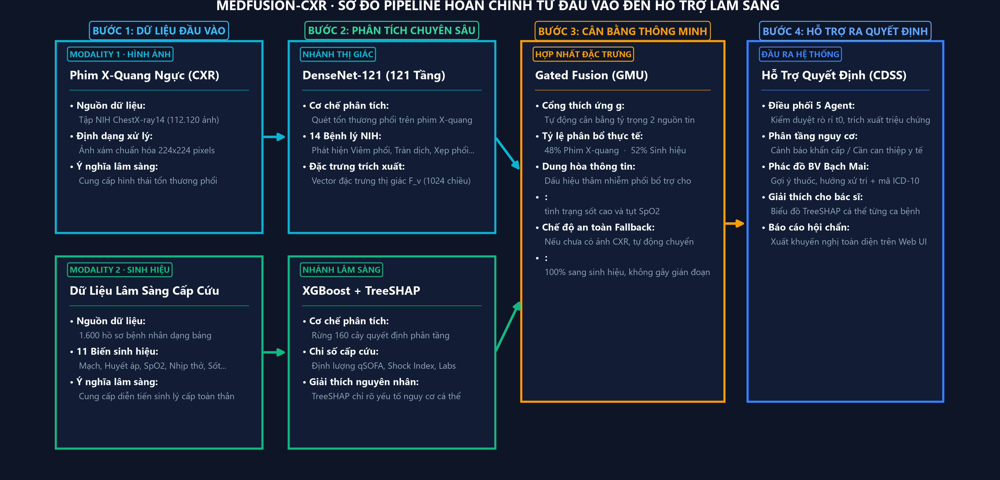
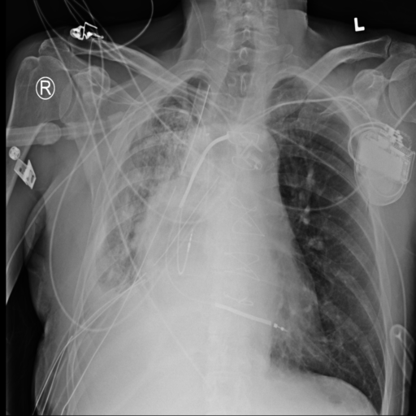
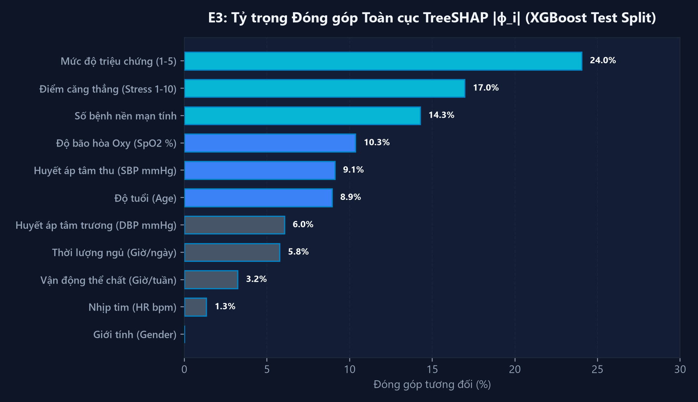
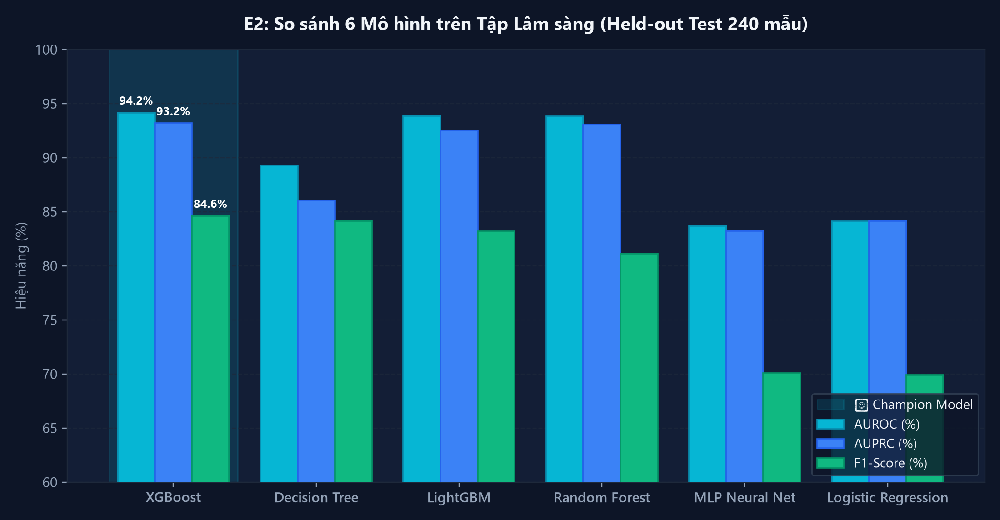
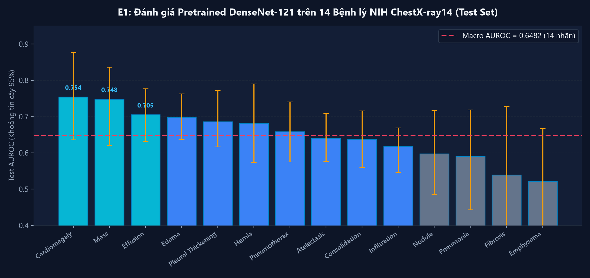

Tích hợp Deep Learning Phim X-Quang (DenseNet-121) và Machine Learning Lâm Sàng (XGBoost) qua Cơ Chế Gated Feature Fusion trong Kiến Trúc Multi-Agent
Khái quát ba trụ cột trọng tâm: Nhu cầu thực tế cấp cứu → Kiến trúc đề xuất MedFusion-CXR → Bài học khoa học & kỹ thuật
Bệnh nhân suy hô hấp diễn biến nhanh trong vài phút; bác sĩ chịu tải cao khi dữ liệu phân mảnh giữa Chẩn đoán hình ảnh và Hồi sức.
• Vision-only: Thấy tổn thương nhưng mù sinh hiệu (không biết sốt cao, tụt SpO₂, sốc).
• Clinical-only: Thấy rối loạn cấp tính nhưng thiếu hình thái (khó phân biệt Viêm phổi vs Suy tim).
Thiếu công cụ dung hòa đồng thời cả 2 nguồn tin để hỗ trợ ra quyết định toàn diện.
• Thị giác: DenseNet-121 quét 14 bệnh lý phổi NIH-14 (vector F_v ∈ ℝ¹⁰²⁴).
• Lâm sàng: XGBoost + TreeSHAP lượng giá nguy cơ (vector F_c ∈ ℝ³²).
Cổng tự cân bằng: 48% ảnh · 52% sinh hiệu; cơ chế Fallback an toàn chuyển 100% sinh hiệu khi chưa có phim X-quang.
Gác cổng mốc t₀ chống rò rỉ, PhoBERT bóc tách bệnh sử tiếng Việt, đối chiếu phác đồ BV Bạch Mai + ICD-10.
Nắm vững tiền xử lý dữ liệu phức hợp (ảnh xám 224×224 kết hợp bảng sinh hiệu), cơ chế Gated Fusion và giải thích mô hình bằng TreeSHAP.
Hiểu sâu về kiểm soát rò rỉ dữ liệu (Zero patient leakage, temporal guardrail t₀); nhận thức rõ ranh giới nghiên cứu trên tập dữ liệu chưa ghép cặp.
Thiết kế hệ điều phối Multi-Agent Swarm, đóng gói hệ thống hoàn chỉnh với Docker, xây dựng giao diện CDSS thân thiện với bác sĩ.
Thiết kế hệ thống đa phương thức toàn diện kết hợp Deep Learning, Machine Learning và Multi-Agent
Minh bạch phương pháp luận: Đánh giá độc lập 2 dataset, tuyệt đối không tạo dữ liệu ghép cặp giả mạo
Quy trình tiền xử lý độc lập và các rào chắn kỹ thuật ngăn ngừa data leakage triệt để
Tích hợp hai nhánh độc lập qua Gated Feature Fusion và phân cấp điều phối bằng Multi-Agent Swarm

Mô hình mạng nơ-ron tích chập sâu phân tích 14 bệnh lý lồng ngực và trích xuất vector đặc trưng thị giác

Phim X-quang Lồng ngực Mẫu (NIH ChestX-ray14)
Grayscale · 224x224 Center-Cropped
Phân tích nguy cơ lâm sàng, trích xuất biểu diễn 32-d và giải thích quyết định cá thể hóa

Cơ chế tuần tự: Tiếp nhận mốc t₀ ➔ Phân luồng song song chuyên biệt ➔ Hội đồng Gated Fusion ➔ Đối chiếu phác đồ Bạch Mai
Chặn triệt để mọi dữ liệu phát sinh sau mốc t₀, bảo đảm zero-leakage.
PhoBERT NER bóc tách triệu chứng, tiền sử, thuốc và thời gian khởi phát.
DenseNet-121 quét 14 bệnh lý phổi ➔ Xuất vector thị giác F_v (1024-d).
qSOFA, Shock Index, XGBoost lượng giá nguy cơ ➔ Xuất vector F_c (32-d).
Hợp nhất đặc trưng thích ứng và cơ chế dự phòng an toàn (Fallback Mode) khi thiếu modality
F̃_v = Proj_v(F_v) ∈ ℝ²⁵⁶ | F̃_c = Proj_c(F_c) ∈ ℝ²⁵⁶
g = σ(W_g [ F̃_v ; F̃_c ] + b_g) ∈ (0, 1)²⁵⁶
F_fusion = g ⊙ F̃_v + (1 − g) ⊙ F̃_c ∈ ℝ²⁵⁶
Fallback Mode: Khi thiếu ảnh X-quang ⇒ g = 0 ⇒ F_fusion = F̃_c
Phân định minh bạch giữa các thực nghiệm đã hoàn thành và điều kiện cần cho thực nghiệm multimodal
Dataset: NIH ChestX-ray14 (Test Set: 1.314 ảnh / 50 BN). Giao thức: Đóng băng ngưỡng Val, Bootstrap 300 lần tính CI 95%.
Dataset: Clinical Tabular (1.600 mẫu; Train 1.120 / Val 240 / Test 240). So sánh 6 mô hình: XGBoost, LightGBM, RF, DT, MLP, LogReg.
Phương pháp: Trích xuất chính xác đóng góp đặc trưng phi tuyến từ cây quyết định (pred_contribs=True) cấp ca bệnh và toàn cục.
Mục tiêu: Xác thực kích thước tensor (1024-d, 32-d -> 256-d), tính liên tục của hàm cổng sigmoid và Fallback mode khi thiếu ảnh.
Điều kiện tiên quyết: Yêu cầu tập dữ liệu ghép cặp theo từng ca bệnh được phê duyệt đạo đức y sinh. Tuyệt đối không báo cáo khi chưa có dữ liệu ghép cặp.
Số liệu định lượng thực tế từ các thực nghiệm đã chạy kiểm chứng trên hệ thống

XGBoost dẫn đầu toàn diện: AUROC 94.16% | AUPRC 93.18% | F1-Score 84.62%

Macro AUROC = 0.6482 (14 nhãn) | Tim to: 0.7541 | Khối u: 0.7481 | Tràn dịch: 0.7049
Giao diện hỗ trợ hội chẩn tương tác thời gian thực tại http://localhost:8000
Đánh giá khách quan các hạn chế và đề xuất lộ trình nâng cấp hệ thống trong tương lai
Thiết kế thành công hệ thống đa phương thức kết hợp DenseNet-121 và XGBoost qua Gated Feature Fusion GMU ℝ²⁵⁶ kèm chế độ Fallback an toàn.
Đánh giá độc lập trung thực: XGBoost đạt AUROC 94.16%, F1 84.62%; DenseNet-121 đạt Macro AUROC 0.6482; không ngụy tạo kết quả ghép cặp giả.
Đóng gói hoàn chỉnh container Docker (medfusion-cxr:latest), giao diện Web HUD trực quan, vượt qua 39/39 automated unit tests.
Sẵn sàng cho Phiên Hỏi Đáp (Q&A) · Dashboard Trực Tiếp: http://localhost:8000